O problema
Inicial na solicitação e no final prestação de contas
SISTEMA SEM FLUXO, AS VEZES O SERVIDOR LANÇA SEM PASSAR PELO SETOR ADMINISTRATIVO DA POLITEC, E O PROCESSO VAI DIRETO PARA A SESP.
ERROS NA SOLICITAÇÃO E PRESTAÇÃO DE CONTAS E DEMORA NA EXECUÇÃO DE SERVIÇO OU COMPRA EMERGENCIAL.
AS-IS · o processo antes do MVP
O caminho real, com quem faz, o que entra, onde espera e o que é automatizável. Fonte: tabela AS-IS do projeto.

Fluxograma AS-IS · amarelo: etapa manual; tracejado: ponto de espera. Os números correspondem à tabela. Fonte Mermaid.
| Etapa | Quem faz | Entra | Ação | Sai | Sistema | Regra | Onde espera | Tempo | Automatizável |
|---|---|---|---|---|---|---|---|---|---|
| Levantar orçamentos | Coordenador ou gerente da unidade | Necessidade de compra ou serviço | Reúne 3 orçamentos | 3 orçamentos | 3 orçamentos obrigatórios | Fornecedores | A medir | Não | |
| Encaminhar à DAS | Coordenador ou gerente | Orçamentos | Envia por e-mail para análise | Pedido na DAS | Passar pela DAS antes do SICAD | Caixa da DAS | A medir | Sim, com regra clara | |
| Cadastrar no SICAD | Servidor solicitante | Manifestação favorável da DAS | Registra o pedido com orçamentos e justificativa | Pedido no SICAD | SICAD | Anexar 3 orçamentos e justificativa | Não identificado | A medir | Pouco |
| Aprovar (chefia imediata) | Chefia imediata | Pedido no SICAD | Aprova ou devolve | Pedido aprovado | SICAD | Aprovação da chefia | Caixa da chefia | A medir | Não |
| Conferir documentos (SESP) | Setor financeiro da SESP | Pedido aprovado | Confere pelo checklist | Pedido conferido | SICAD | Checklist da SESP | Fila do financeiro | A medir | Sim, com apoio humano |
| Confirmar dotação (NGER) | NGER, a pedido do ordenador | Pedido conferido | Verifica disponibilidade orçamentária | Dotação confirmada | SICAD | Disponibilidade orçamentária | Fila do NGER | A medir | Não |
| Autorizar | Ordenador de despesas | Dotação confirmada | Autoriza o adiantamento | Adiantamento autorizado | SICAD | Requisitos atendidos | Caixa do ordenador | A medir | Não |
| Pagar | Setor orçamentário e financeiro | Autorização | Empenha e paga | Recurso na conta | SICAD | Procedimentos orçamentários | Fila do financeiro | A medir | Não |
| Aplicar o recurso | Servidor solicitante | Recurso | Compra ou contrata | Notas fiscais e fotos | Externo | Até 90 dias (180 para intervenção predial) | Fornecedor | A medir | Não |
| Prestar contas | Servidor solicitante | Notas fiscais e fotos | Lança no SICAD e envia à contabilidade | Prestação de contas | SICAD | Até 30 dias após o fim da aplicação | Fila da contabilidade | A medir | Pouco |
| Analisar a prestação | Contabilidade da SESP | Prestação de contas | Confere e devolve se houver pendência | Prestação conferida ou devolvida | SICAD | Correção em até 10 dias úteis | Correção do servidor | A medir | Sim, com apoio humano |
| Aprovar e encerrar | Ordenador de despesas e contabilidade | Prestação conferida (ou com ressalvas) | Aprova e encerra | Processo arquivado | SICAD | Ressalvas: decisão do ordenador | Caixa do ordenador | A medir | Não |
TO-BE · o processo com o MVP
O que muda em cada etapa, quem passa a fazer e o ganho esperado. Fonte: tabela TO-BE do projeto.

Fluxograma TO-BE · verde: máquina (automação local); azul: pessoa (fé pública). Fonte Mermaid.
Quando o app existir, a DAS sabe em que etapa está cada adiantamento e quais prazos vão vencer, e nenhum pedido chega à SESP sem a análise da DAS.
- Registrar o pedido na DAS
A DAS registra o pedido no app antes do SICAD, com checklist dos 3 orçamentos
A pessoa assistida pela máquinaNenhum pedido chega à SESP sem passar pela DAS - Acompanhar as etapas
Cada mudança de etapa no SICAD é anotada no app com a data
A pessoa assistida pela máquinaSaber onde o processo está e há quanto tempo - Alertar prazos
O app calcula os prazos de aplicação, prestação e correção e avisa antes do vencimento
A máquina (automação)Prestação de contas no prazo - Registrar pendências
Devoluções da contabilidade viram pendências com prazo de 10 dias úteis
A pessoa assistida pela máquinaCorreção no prazo e motivo registrado - Painel
Processos por situação, tempo por etapa e devoluções
A máquina (automação)Gargalo visível
| Etapa | O que muda | Quem faz | Benefício | Esforço |
|---|---|---|---|---|
| Registrar o pedido na DAS | A DAS registra o pedido no app antes do SICAD, com checklist dos 3 orçamentos | A pessoa assistida pela máquina | Nenhum pedido chega à SESP sem passar pela DAS | Baixo |
| Acompanhar as etapas | Cada mudança de etapa no SICAD é anotada no app com a data | A pessoa assistida pela máquina | Saber onde o processo está e há quanto tempo | Baixo |
| Alertar prazos | O app calcula os prazos de aplicação, prestação e correção e avisa antes do vencimento | A máquina (automação) | Prestação de contas no prazo | Médio |
| Registrar pendências | Devoluções da contabilidade viram pendências com prazo de 10 dias úteis | A pessoa assistida pela máquina | Correção no prazo e motivo registrado | Baixo |
| Painel | Processos por situação, tempo por etapa e devoluções | A máquina (automação) | Gargalo visível | Médio |
O que o MVP entrega
Tela-assinatura: Régua de prazos por processo.
Menu do MVP: PainelProcessosNovo pedidoRelatórioConfiguração
Regras de negócio
| ID | Regra | Quando | Tipo | Exceção |
|---|---|---|---|---|
RN01 | O pedido exige 3 orçamentos e a justificativa | Ao registrar o pedido | Validação | Nenhuma |
RN02 | Todo pedido passa pela DAS antes do cadastro no SICAD | Início do processo | Negócio | Nenhuma |
RN03 | Aplicação do recurso em até 90 dias (180 para intervenção predial simplificada) | Após o pagamento | Cálculo | Nenhuma |
RN04 | Prestação de contas em até 30 dias corridos após o fim da aplicação | Após a aplicação | Cálculo | Nenhuma |
RN05 | Correção de pendência em até 10 dias úteis após a notificação | Ao registrar a devolução | Cálculo | Nenhuma |
RN06 | A soma das notas fiscais não pode passar do valor concedido | Na prestação de contas | Validação | Diferença vira alerta para a DAS |
RN07 | O app não aprova nem autoriza: registra o que aconteceu no SICAD | Em todas as etapas | Negócio | Nenhuma |
Papéis
| Papel | Quem é | O que vê | O que faz | O que não faz | Registro |
|---|---|---|---|---|---|
| Servidor solicitante | Coordenador, gerente ou servidor da unidade | Os próprios pedidos e pendências | Registra o pedido e anexa a lista dos orçamentos | Enviar à SESP sem passar pela DAS | Pedido, datas e anexos informados |
| DAS/POLITEC | Diretoria de Administração Sistêmica | Todos os pedidos da POLITEC | Analisa a viabilidade, acompanha etapas e prazos | Aprovar no lugar do ordenador | Parecer, etapas e pendências |
| Contabilidade da SESP | Setor de contabilidade | Prestações de contas enviadas | Registra devoluções e motivos (quando usar o app) | Alterar o pedido | Devoluções e ressalvas |
| Ordenador de despesas | Autoridade da SESP | Painel (consulta) | Consulta o andamento | Nenhuma ação no app | Nenhum |
Métricas do piloto
Como testar
O MVP é um `index.html` offline, com dados fictícios. Abra index.html.
cd Apps/adiantamento python construir.py python testes/testar.py python testes/cenarios.py python testes/jornada.py # Lightpanda (via WSL, CDP em 9222 e HTTP em 8000) python testes/jornada.py --cdp http://127.0.0.1:9222 --base http://127.0.0.1:8000
Documentos: PROJETO.md · sprint.md · README.md